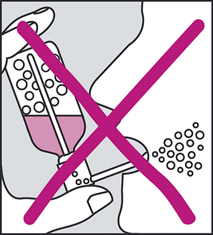

|
 |
| ГЕКСОРАЛ® (HEXORAL®) hexetidine аэрозоль д/местн. прим. | ||||||
|
Клинико-фармакологическая группа: Антисептик для местного применения в ЛОР-практике и стоматологии Номер и дата регистрации: П N014010/01 от 10.08.10 Код ATX: A01AB12 |
Владелец регистрационного удостоверения: зарегистрировано Представительство: | |||||
Форма выпуска, состав и упаковка ◊ Аэрозоль для местного применения в виде прозрачной бесцветной жидкости с запахом ментола.
Вспомогательные вещества: полисорбат 80 - 1.4 г, лимонной кислоты моногидрат - 0.07 г, натрия сахаринат - 0.04 г, левоментол - 0.07 г, эвкалипта прутовидного листьев масло - 0.0011 г, натрия кальция эдетат - 0.1 г, этанол 96% - 4.333 г, натрия гидроксид - q.s. до pH 5.5±0.2, вода очищенная - q.s. до 100 мл, азот - q.s. до 5 бар. 40 мл - баллоны аэрозольные алюминиевые (1) в комплекте с одной насадкой-распылителем или четырьмя насадками-распылителями разного цвета - пачки картонные. | ||||||
| ||||||
Описание препарата основано на официально утвержденной инструкции по применению и утверждено компанией-производителем для издания 2022 г. | ||||||
Фармакологическое действие |
Фармакокинетика |
Показания |
Режим дозирования |
Побочное действие |
Противопоказания |
Беременность и лактация |
Особые указания |
Передозировка |
Лекарственное взаимодействие |
Условия хранения и сроки годности |
Условия реализации
Фармакологическое действие
Противомикробное действие препарата Гексорал® связано с подавлением окислительных реакций метаболизма бактерий (антагонист тиамина). Препарат обладает широким спектром антибактериального и противогрибкового действия, в частности в отношении грамположительных бактерий и грибов рода Candida. Гексэтидин оказывает слабое анестезирующее действие на слизистую оболочку. Препарат обладает противовирусным действием в отношении вирусов гриппа А, респираторно-синцитиального вируса (РС-вирус), вируса простого герпеса 1 типа, поражающих респираторный тракт. Фармакокинетика
Гексэтидин очень хорошо адгезируется на слизистой оболочке и практически не всасывается. После однократного применения препарата следы активного вещества обнаруживают на слизистой оболочке десен в течение 65 ч. В зубном налете активные концентрации сохраняются в течение 10-14 ч после применения. Показания
В качестве симптоматического средства.
Режим дозирования
Местно. Гексэтидин адгезируется на слизистой оболочке и благодаря этому дает стойкий эффект. В связи с этим препарат следует применять после еды. Дети от 3 до 6 лет: применение препарата возможно после консультации с медицинским работником. Взрослые и дети старше 6 лет: обрабатывают пораженные участки при задержке дыхания. По 1 впрыскиванию в течение 1-2 сек 2 раза/сут. Во время введения препарата необходима задержка дыхания, т.к. вдыхание препарата может спровоцировать ларингоспазм. Длительность лечения определяется врачом. Общие рекомендации по применению Препарат распыляют в полости рта или глотке. С помощью аэрозоля можно легко и быстро обработать пораженные участки. Необходимо выполнить следующие действия: 1. надеть на аэрозольный баллон насадку-распылитель; 2. направить конец насадки-распылителя на пораженный участок полости рта или глотки; 3. во время введения препарата флакон следует удерживать постоянно в вертикальном положении, как показано на рисунке;
 4. ввести необходимое количество препарата, надавливая на головку насадки-распылителя в течение 1-2 сек, не дышать при введении аэрозоля. Побочное действие
Нежелательные реакции, выявленные при пострегистрационном применении препарата, классифицированы следующим образом: очень часто (≥1/10), часто (≥1/100, <1/10), нечасто (≥1/1000, <1/100), редко (≥1/10000, <1/1000), очень редко (<1/10000), частота неизвестна (частота возникновения не может быть оценена на основании имеющихся данных). Со стороны иммунной системы: очень редко - реакции гиперчувствительности (в т.ч. крапивница), ангионевротический отек. Со стороны нервной системы: очень редко - агевзия, дисгевзия. Со стороны дыхательной системы: очень редко - кашель, одышка, обусловленная появлением реакции гиперчувствительности, ларингоспазм. Со стороны желудочно-кишечного тракта: очень редко - сухость во рту, дисфагия, тошнота, увеличение слюнных желез, рвота. Общие расстройства и нарушения в месте введения: очень редко - реакции в месте нанесения (в т.ч. раздражение слизистой оболочки полости рта и глотки, ощущение жжения, парестезия ротовой полости, изменение окраски языка, изменение окраски зубов, воспаление, образование пузырей и изъязвления). Если любые указанные побочные эффекты усугубляются или отмечаются другие побочные эффекты, пациенту следует обратиться к врачу. Противопоказания
С осторожностью: при повышенной чувствительности к ацетилсалициловой кислоте. Применение при беременности и кормлении грудью
Сведений о каких-либо нежелательных эффектах при применении препарата Гексорал® при беременности и в период грудного вскармливания нет. Тем не менее, перед назначением препарата Гексорал® беременным или кормящим женщинам следует тщательно взвесить ожидаемую пользу и риск лечения, учитывая отсутствие достаточных данных о проникновении препарата через плацентарный барьер и выделении с грудным молоком. Особые указания
Специальных предписаний нет. Во время введения препарата необходима задержка дыхания. Дети могут применять препарат с такого возраста, когда нет опасности неконтролируемого его проглатывания или когда они не сопротивляются постороннему предмету (насадке-распылителю) во рту при применении аэрозоля и способны задерживать дыхание при впрыскивании препарата. Содержание этанола в препарате составляет 5.15%. Одна доза препарата содержит 20.3 мг этанола (в пересчете на абсолютный спирт). Содержимое аэрозольного баллона находится под давлением. Не следует открывать, прокалывать и сжигать баллон, даже если баллон пуст. Если лекарственное средство пришло в негодность или истек срок годности, не следует выливать его в сточные воды или выбрасывать на улицу. Необходимо поместить лекарственное средство в пакет и положить в мусорный контейнер. Эти меры помогут защитить окружающую среду. Влияние на способность к управлению транспортными средствами и механизмами Гексорал® аэрозоль для местного применения не влияет на способность управлять транспортными средствами и заниматься другими потенциально опасными видами деятельности. Передозировка
Маловероятно, что гексэтидин может оказывать токсическое действие при применении в соответствии с рекомендуемым режимом дозирования. Симптомы: проглатывание большого количества препарата, содержащего этанол, может привести к появлению признаков/симптомов алкогольной интоксикации. Лечение: проведение симптоматической терапии, как при алкогольной интоксикации. Промывание желудка необходимо в течение 2 ч после проглатывания избыточной дозы. При любых случаях передозировки пациент должен немедленно проконсультироваться с врачом. Условия хранения и сроки годности
Препарат следует хранить в недоступном для детей месте при температуре не выше 25°С. Срок годности - 3 года. Не использовать по истечении срока годности, указанного на упаковке. Содержимое аэрозольного баллона следует использовать в течение 6 месяцев после первого применения. |
||||||
Вернуться наверх |
||||||

Copyright © Справочник Видаль «Лекарственные препараты в России», Москва, Россия